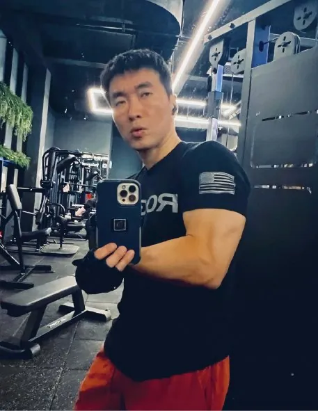
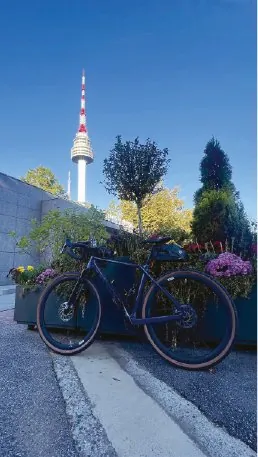

녹내장은 시신경 손상으로 시야가 나빠지는 질환이다. 시신경 손상의 가장 큰 위험인자는 ‘높은 안압’으로 알려졌지만, 안압 하강만으로 모든 녹내장의 진행을 중단시킬 수는 없다고 한다. 안혈류의 불안정성, 근시 등으로 인한 시신경의 취약성, 완전히 알려지지 않은 분자생물학적 기전 등이 다양하게 관여하기 때문이다.
<녹내장과 생활 습관의 상관관계에 대한 연구>는 최근 집중적으로 연구되고 있는 분야이다. 특히 <녹내장과 유산소운동 상관관계>는 최근 활발한 연구가 이뤄지는 녹내장 파트의 관심사이기도 하다. 최근 논문을 통해 ‘녹내장과 유산소운동’에 대해 소개한다.
지난 6월 『Ophthalmology』에 실린 논문 한 편을 보자. 영국 바이오뱅크(UK Biobank)에 등록된 502,489명을 대상으로 신체활동과 녹내장의 상관관계를 분석한 것이다. Pradeep Ramulu(존스홉킨스대학), Louis Pasquale(하버드대학), Janey Wiggs(하버드대학), Paul Foster(무어필드안과병원) 교수 등이 공동 저자로 참여했다. 연구에서는 안압, 황반부 OCT 데이터, 녹내장 여부와 개인별 운동량을 조사했으며, 설문지 외에도 손목에 차는 가속도 측정기를 사용했다.
논문 결과
- 신체활동의 강도와 녹내장 유무 혹은 안압의 정도는 특별한 상관관계가 관찰되지 않았다.
- 신체활동 강도가 높을수록 망막 내층 두께가 두꺼웠다. 이는 설문조사와 가속도 측정기에서 일관되게 나왔다.
- 가벼운 운동보다 중등·고강도의 운동이 망막 내층 두께 증가와 유의미한 관련성이 있었다.
- 앉아서 보내는 시간이 많을수록 망막 내층의 두께가 얇은 경향을 보였다.
신체활동 강도가 녹내장 유무, 안압과 특별한 상관관계가 없다는 것은 녹내장의 병인론을 고려할 때 충분히 예측 가능한 결론이다. 하지만 중등·고강도의 운동이 망막 내층 두께 증가와 유의미한 관련성이 있다는 부분은 유심히 살펴야 한다. 논문 결과에 따르면 녹내장 환자들은 적어도 중등 강도 이상의 유산소운동을 일주일에 2~3회 이상 하는 것을 적극적으로 권유한다.
유산소운동은 시신경에 어떤 영향을 미칠까?

첫째, 시신경 보호 효과다. 망막신경절세포를 포함한 뉴런 형태의 신경세포는 교세포들의 도움을 받아 산다. 교세포가 높은 안압이나 스트레스를 받으면 염증을 유발하는 사이토카인을 분비해 뉴런 생존에도 악영향을 미친다. 적당한 강도의 유산소운동은 교세포의 활성화를 억제해 뉴런을 보호하는 효과가 있다는 것이 동물실험 결과 나타났다.
둘째, 혈류 개선에 따른 부수적 효과다. 중등도 이상의 유산소운동은 심박수를 증가시켜 말초혈류를 늘린다. 녹내장이 진행되면 모세혈관 손상 정도가 증가한다고 알려져 있는데, 유산소운동은 모세혈관을 확장시켜 말초 조직에 산소와 영양소를 공급하는 것을 도와줄 수 있다.
뇌의 신경세포와 시신경을 구성하는 신경세포가 비슷한 구조와 생존 메커니즘을 가지고 있다는 점을 고려할 때, 중등도 이상의 유산소운동은 녹내장 환자들에게 적극적으로 권장될 것으로 판단한다. 다만 녹내장 진행 정도에 따라 야외 활동이 어렵거나 관절·심혈관 상태가 좋지 않아 운동이 쉽지 않은 경우도 있으므로, 운동 계획은 담당 의료진과 상의하는 것이 좋다.